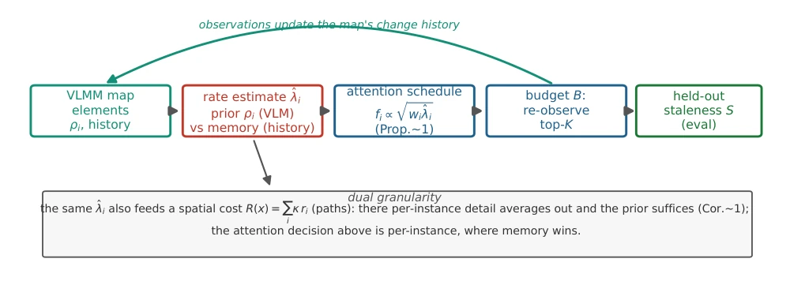
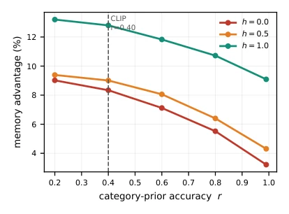
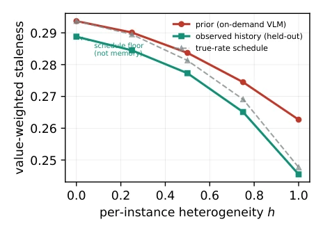
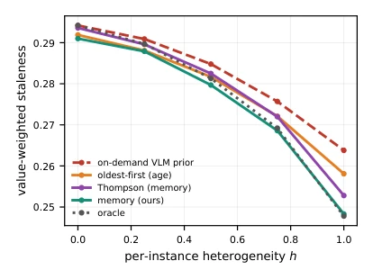
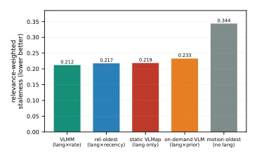
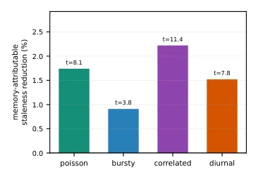
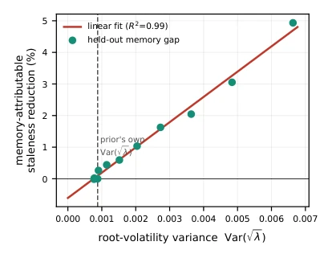

This paper casts a sobering light on behavioral maps. VLMM [1] is often touted for perceiving dynamics, but the authors' actual measurements found that using it for path planning (Spatial Navigation) yields almost zero benefit in closed-loop execution; the 35% advantage during planning drops to only 4% when actually deployed. The true value lies in "attention allocation": when perception budget is limited, the map's memory (change history) can guide the robot on where to look. Although the gain is not large (1-5%), the theoretical derivation is elegant, proving that the benefit equals the variance of the square root of the volatility rate Var(√λ). The drawback is that experiments rely mainly on simulation, real perception reliability has a large impact, and it requires high heterogeneity, somewhat like "theory is substantial, reality is stark". It reminds us that maps are not just navigation tools, but also resource allocators; do not expect it to save you much distance, but it can save you energy.
Existing open-vocabulary maps (such as VLMaps [2], ConceptFusion [3]) mostly assume a static world. Although dynamic maps [9]-[11] incorporate behavior, re-observation strategies are mostly fixed scheduling or coverage scanning, not utilizing the map's own history. This paper points out that behavioral maps face two problems: spatial navigation and resource allocation. The former has been proven to have low benefit, the latter is the key. Robot perception budget is limited, needs to decide "what to attend to at this moment". Existing VLMs can only provide category priors, lacking instance-level change history, leading to inefficient scheduling in heterogeneous scenes. This is not just a scheduling problem, but the core challenge of how to effectively utilize limited perception resources. The authors attempt to prove that only by utilizing history can the limitations of category priors be broken, achieving true adaptive perception.

Fig. 1. Budgeted re-perception as attention. The map holds each element’s change history; a rate estimate ˆλi is formed from the on-demand category prior (VLM) or the map’s observed history (memory). The √·-law schedule (Prop. 1) sets each element’s re-check frequency, a budget of K selects which to re-observe, and each observation updates the history (loop); we score value-weighted staleness on a held-out realisation. Dual granularity (bottom): the same estimate also feeds a spatial cost for path planning, where per-instance detail averages out and the prior suffices (Cor. 1); the attention decision is per-instance, where memory wins.
The overall framework models re-perception as an attention decision. The map maintains the change history of each element, estimating the change rate λ_i through Bayesian update (combining VLM prior and observation history). The scheduling strategy follows the √·-law, frequency f_i ∝ √(w_i * λ_i), selecting re-observation objects under budget K. The innovation lies in the theoretical proof: memory benefit equals Var(√λ), i.e., scene dynamics heterogeneity. Additionally, language conditions are introduced, using CLIP to calculate task-related weights w_i, combining with motion channels to achieve language-conditioned re-perception, superior to timestamp or category priors alone. The authors also compared the Whittle index strategy, proving the √·-law is a continuous approximation, requiring correction in discrete scenarios. This framework converts perception budget optimization into a mathematical resource allocation problem, possessing theoretical depth.

Fig. 6. Prior-quality sweep. As a category prior’s accuracy r improves, memory’s base advantage (h=0) shrinks toward the schedule floor (a better VLM erases it), but the per-instance heterogeneity slope (gap between h curves) is roughly constant in r – no category prior sees instance usage. CLIP sits at r=0.40.
Based on AI2-THOR simulation, 951 objects, 40 scenes. Held-out evaluation is adopted to avoid overfitting. The metric is value-weighted staleness. Results show that when heterogeneity is high (h=1), the memory strategy reduces staleness by 5% compared to VLM prior. Whittle index verifies scheduling is not an artifact. Downstream fetch task confirms reduction in invalid trips. In language condition experiments, VLMM outperforms the relevance-weighted last strategy (+2.5%). But when perception reliability is below 0.3, the advantage reverses. The authors also tested real CLIP priors, finding memory advantage can reach 26%, proving the insufficiency of VLM appearance priors. Experiments covered different change processes and budget sensitivity, conclusions are robust, but also exposed the gap between simulation and reality.

Fig. 2. Held-out attention policy, 951 objects. As per-instance rates deviate from the category prior (increasing h), observed history (memory, teal) pulls value-weighted staleness below the on-demand-VLM prior (red). The h=0 gap is a schedule-level floor, not memory; the memory-attributable effect is the heterogeneity-driven separation.

Fig. 3. Competitive schedulers, run online (skewed importance). The on- demand VLM prior (red, dashed) is beaten even by memory-light oldest- first; history-based policies (Thompson, memory) win and memory matches the oracle. Memory’s advantage is thus over age-based scheduling, not merely over the prior.

Fig. 7. Language-conditioned re-perception (online arena, relevance- weighted staleness, lower better). A map using both open-vocabulary relevance and observed dynamics (VLMM, lang×rate) beats every ablation. The strongest competitor is relevance-weighted oldest-first (lang×recency) – a static open-vocabulary map plus a last-seen timestamp, with no rate channel – which VLMM still beats by +2.5% (t=7.4); then a static open- vocabulary map (language only), an on-demand VLM (language + category prior), and a motion-only oldest-first map (recency, no language).
其他图片Other Figures

Fig. 4. Memory-attributable staleness reduction (held-out, net of the h=0 floor) across four change processes with identical per-object mean rates. Positive and significant throughout; burstiness attenuates it.

Fig. 5. Empirical test of Cor. 1. The realised held-out memory reduction is linear in the root-volatility variance Var( √